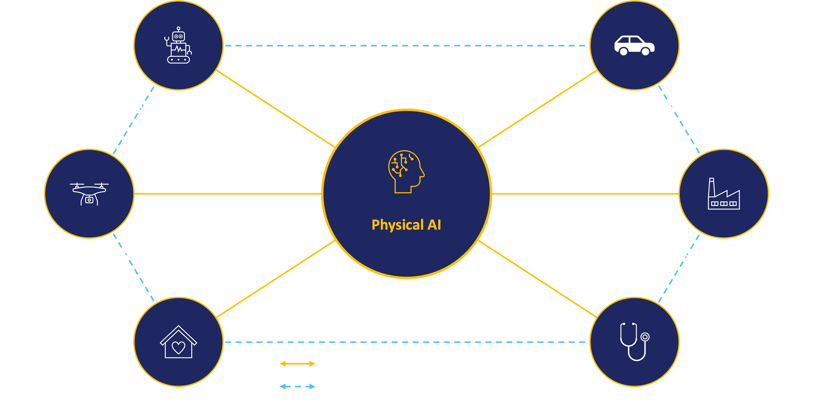
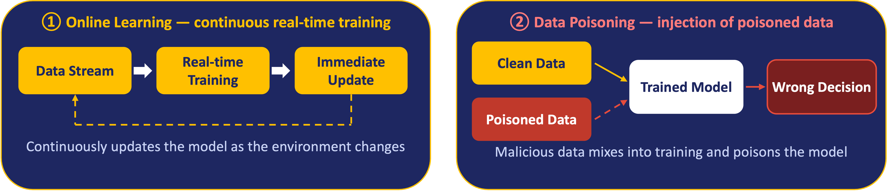
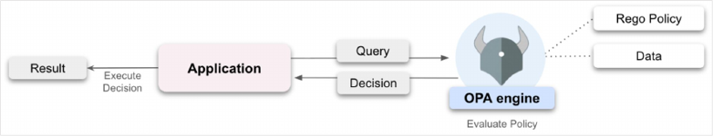
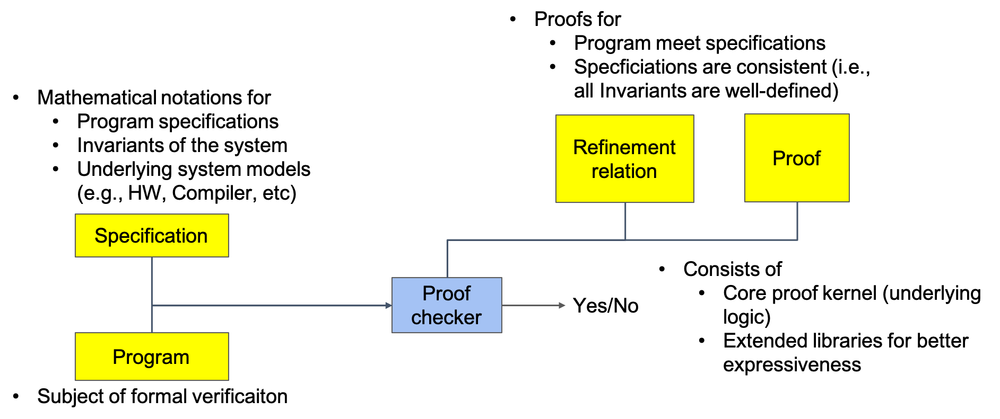
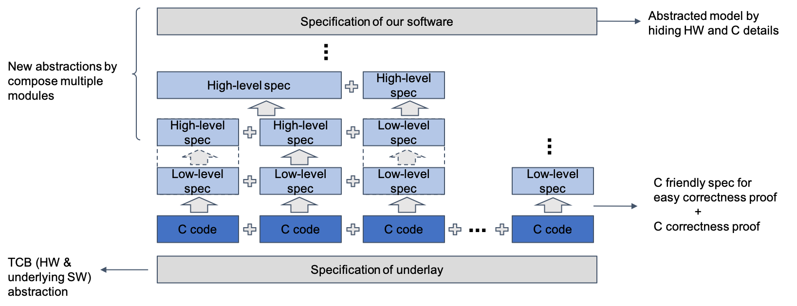
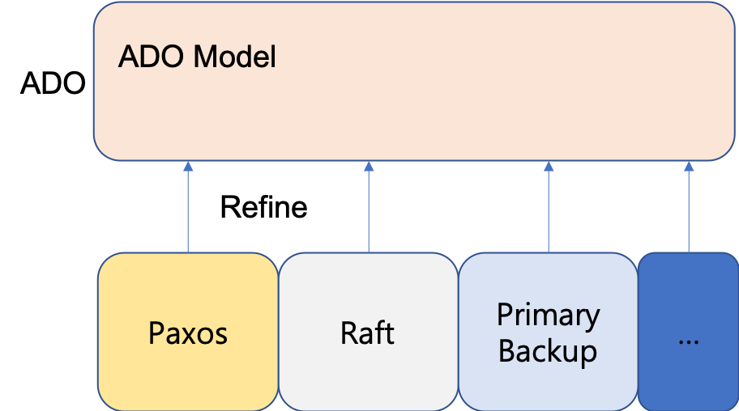
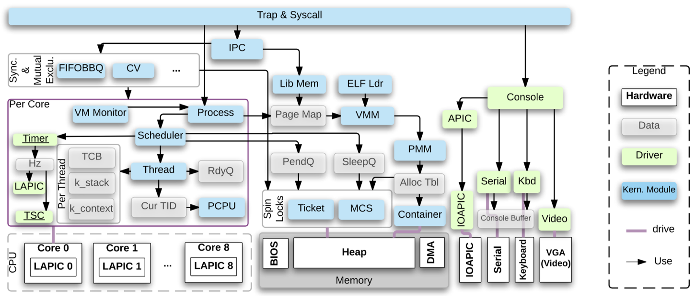
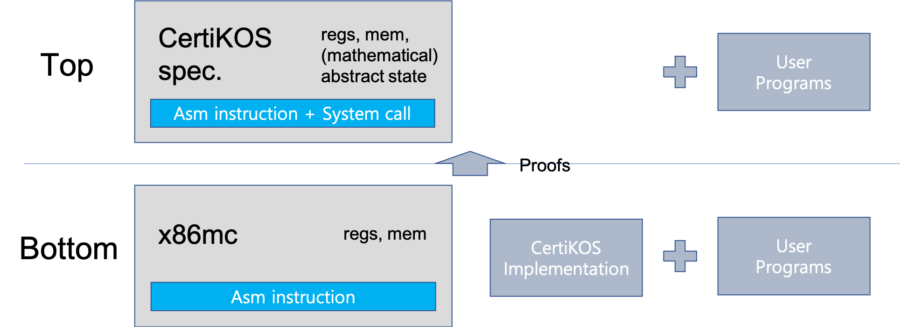
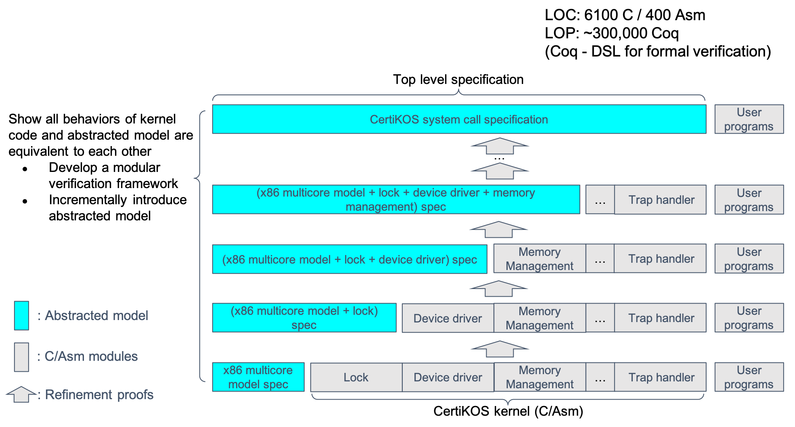
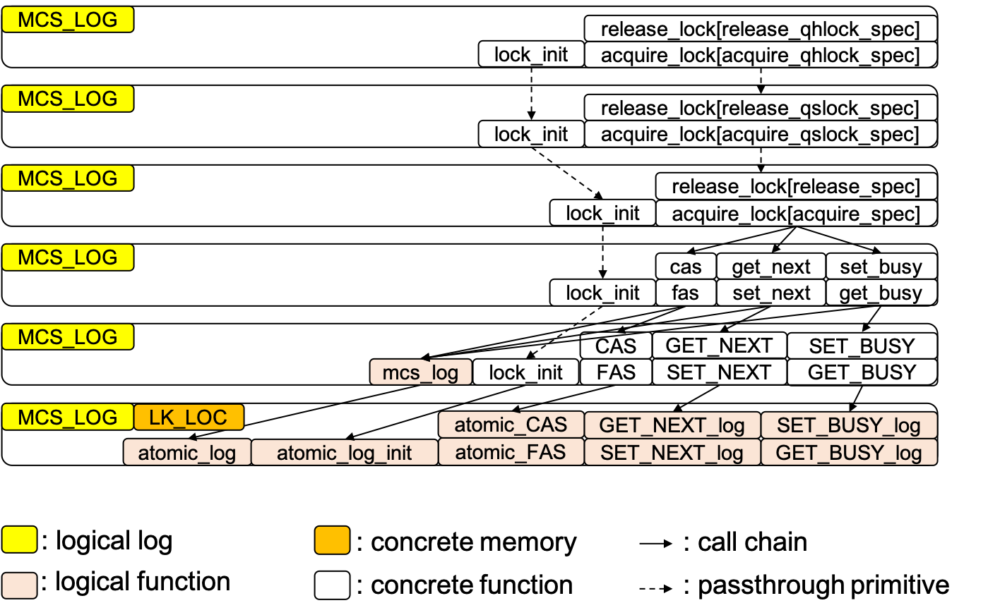

Trustworthy Edge Collaboration Infrastructure for the Future Computing Environment.
In the coming computing environment, countless edge devices — humanoid robots, autonomous
mobility, drones and logistics robots, smart factories, healthcare — are connected and act
directly in the physical world.
— 로봇 · 모빌리티 · 인프라가 연결되어 물리 세계에서 함께 살아가는 미래 컴퓨팅 환경의 신뢰 가능한 Edge 협업 인프라를 연구합니다.

In this shift, the role of edge devices changes fundamentally. They are no longer simple
terminals that relay information to a central server — they now perceive, decide, and
physically act, learning and executing directly in the field. For such a system to be
safe, trustworthy, and correct, we must guarantee the integrity of execution and provide safe
recovery from faults. My lab
(FCAI Lab) tackles
this end-to-end through four challenges.
— 이 변화 속에서 Edge Device의 역할도 근본적으로 달라집니다: 정보를 전달하던 단순 단말을 넘어, 현장에서 스스로 지각·판단·행동하는 실행 주체가 됩니다.
When many edge devices learn from real-time streams, can we filter malicious poisoning
before it is absorbed into the model? Since poison, once learned, is hard to undo, clean
data must be preserved while poison is blocked pre-emptively.

2 CHALLENGE
Efficient Model Decomposition & Deployment효율적 모델 분할 · 배포
Not every device needs the full network. Can we cut out only the required functionality (classes)
and deploy it while preserving the original model's decisions? We treat decomposability
as a property that demands both semantic preservation and structural separation.
3 CHALLENGE
Trustworthy Collaboration신뢰할 수 있는 협업
Agents whose number and type change constantly must coordinate through transactions while
preserving authority and data security — unlike closed servers or blockchains. Long-running,
asynchronous, loosely-coupled workflows need flexible transaction patterns (Saga) with security
policy baked in and formally verified.

4 CHALLENGE
Complete Program Proof완벽한 프로그램 증명
These protocols ultimately become implementation code — often spanning several languages
— and change often; in this domain even tiny defects are catastrophic. Formal verification
is the only way to mathematically guarantee correctness, but it is extremely costly (seL4 took
~11 years). We attack this on two fronts: a multi-language verification framework and
automated proof generation to remove the biggest bottleneck.
Our lab researches this entire pipeline end-to-end.
우리 연구실은 이 전체 파이프라인을 엔드투엔드로 연구하고 있습니다.
Grants
Development of Industry-Specific Physical AI Foundation Models and Cultivation of Next-Generation Convergence Talent (산업 특화 Physical AI 파운데이션 모델 개발 및 차세대 융합형 인재양성), Institute of Information & Communications Technology Planning & Evaluation (IITP, 정보통신기획평가원) — consortium led by Lotte Innovate, 2026.04.01–2029.12.31 (Phase 1 through 2027.12.31) (PI of the Yonsei University subproject, carried out jointly with two other research groups at Yonsei)
광 컴퓨팅 연산기 지원 딥러닝 컴파일러 설계 및 프로토타입 개발, 위탁과제(ETRI), 2025.03.01–2027.02.28 (참여 연구원)
A Flexible and Scalable Modular Development and Verification Methodology for Distributed Systems Based on Compositional Consensus Algorithms (통합 합의 알고리즘 기반 분산 시스템을 위한 유연하고 확장 가능한 모듈화 개발 및 검증 방법론), Outstanding Young Scientist Grant / National Research Foundation (우수신진연구/한국연구재단), 2025.03.01–2027.02.28 (PI)
A Fundamental Technology for Modular Neural Network Verification (신경망 분해/통합 검증을 위한 원천 기술 연구), 삼성미래기술육성재단, 2023.12.01–2026.11.30 (PI)
Formal approaches to achieve accuracy of quantized neural network, Korea Model Optimization Program, Google Korea, 2023.09.22–2024.09.21 (PI)
Research Interests
Physical AI & edge collaboration infrastructure
Trustworthy multi-agent (LLM) systems
Data poisoning defense
Neural network decomposition & deployment
Proof automation
Reliability in system software
Distributed systems & blockchain
Hypervisor & operating systems
Computational storage
Neural network reliability
Formal verification
Fuzzing
Programming language design & theory
Formal verification automation
Verification theories & tools
Background, Foundational and Past Work
Earlier work and foundational research that underpins the vision above — the core techniques in
formal verification, distributed systems, and systems software that the four challenges build on.
Formal Verification
Most of my projects are related to formal verification, “the act of proving or disproving
the correctness of intended algorithms underlying a system with respect to a certain formal
specification or property, using formal methods of mathematics (from Wikipedia)”.
Formal verification requires multiple components: 1) a target program, 2) a mathematical
specification for the program, 3) a mathematical relation to define the consistency between the
program and the specification, and proofs and a proof checker to actually show the correctness of
the program and the specification. The figure below shows how key components in formal verification
are related to one another.

Formal verification has several granularities, and it is the strongest way to guarantee the
correctness of software (by showing the target software faithfully implements the rigorous
specification). However, it is not practical due to the high verification cost. My main work is
related to reducing the cost while fully facilitating the power of formal verification. To do that,
we usually use a modular way to separately verify multiple components in the software and compose
those proofs together to show the entire correctness, as the figure below shows.

Machine Learning Model Correctness Verification
The Software 2.0 era has seen a significant increase in neural network-based software and services,
raising concerns about potential costs related to neural network failures. Formal verification
stands out as the singular approach to ultimately guarantee correctness, but challenges persist in
the application of formal verification to this domain. Even state-of-the-art techniques for neural
network verification face limitations in two crucial verification components. Current methodologies
do not fully illustrate the complete behavior of neural networks as formal specifications; instead,
these techniques primarily focus on local robustness. Furthermore, they continue to struggle with
the efficient management of large-scale models and face challenges in achieving optimal reusability.
To address the stated challenges, our objective is to develop the foundational theory and
methodology for neural network verification. Drawing inspiration from concepts in the formal
verification of conventional software and considering the distinctive characteristics of neural
network domains, we aim to create a methodology that precisely articulates multiple desired
properties of target networks in a mathematically rigorous manner, without restricting the types of
these properties. Furthermore, we put forward a modular verification approach based on both the
stated specifications and the target network structure. We are confident that our endeavors will
boost the reliability of neural networks, thereby opening pathways for building critical
network-related applications and societal advancements.
ADO: Atomic Distributed Objects — Distributed System Verification
The low-level parts of distributed systems are usually built with distributed consensus protocols
that guarantee consistency at a certain level. Among them, there are several strongly consistent
protocols such as Paxos, Raft, and Chain-replication. They provide the strong guarantee that users
view the same state regardless of any kinds of network and local machine errors in distributed
systems.
However, due to the complexity of those protocols, application builders usually use State Machine
Replication (SMR) as an abstraction of those protocols that are used for the same purpose. However,
SMR sacrifices possessing all possible behaviors (i.e., partial failures) of those protocols in the
model. Therefore, we work on providing a proper but simple program abstraction for multiple
distributed protocols and systems with formal verification.

Also, we provide template-driven protocol safety proof (linearizability) for developers, to enable
them not to consider distributed features while writing specifications and programs in their
development.
Formal Verification on pKVM
pKVM is a hypervisor for Android to increase security in the future Android ecosystem. Please look
at the video below to learn more about pKVM.
We are developing end-to-end formal verification tools for pKVM and verifying it. It includes the following.
A language for writing formal specifications and tests for specifications.
Novel composition theory and tools for formal verification.
Automated tools to reduce the human cost of formal verification.
Formally defined hardware specifications.
Translation validation for C code compilation.
CertiKOS
CertiKOS is an extensible architecture for building certified concurrent OS kernels. Complete formal
verification of a non-trivial concurrent OS kernel is widely considered a grand challenge. We
present a novel compositional approach for building certified concurrent OS kernels. CertiKOS is not
a fully practical operating system, but it contains multiple services that can be used for
restricted purposes. The figure below shows how we build CertiKOS with 6500 lines of C and x86
assembly.

With the kernel, the main purpose of our formal verification is showing that all user programs
running on top of our formal specification faithfully reflect all the behaviors of running the same
user programs on top of the kernel implementation (see below).

To show that, we aggressively decompose the kernel into multiple layers (65 layers) and granularly
provide abstractions of each layer. The figure below shows the overall module hierarchy of CertiKOS.

Each model contains multiple layers to ease the verification process. For example, MCS Lock formal
verification consists of six layers to provide the abstracted lock specification that can also be
used as a specification of other lock algorithms and implementations (e.g., ticket lock).

We are working on improving the methodologies used in CertiKOS and extending CertiKOS. Possible extensions are as follows.
CertiKOS ARM Hypervisor: verifying functional correctness and security properties (integrity and confidentiality) of the CertiKOS hypervisor on the ARM platform.
Concurrent Linking Framework: providing a user-friendly framework to link multiple separate instances in concurrent program verification, and linking CertiKOS proofs using this framework as an example.
User Program Linking: providing a framework to link separately developed and verified user programs with CertiKOS.
Other Projects
Quantization Benchmarks
Quantization is the process of mapping continuous infinite values to a smaller set of discrete
finite values, and it is one of the most prevalent optimization techniques for machine learning
models. We are working on how to measure the effect of multiple quantization options.
Smart Contract Synthesis
A smart contract is a self-executing contract with the terms of the agreement between buyer and
seller being directly written into lines of code. We are working on building a tool to automatically
synthesize smart contracts for specific domains.